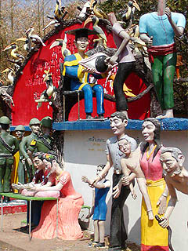
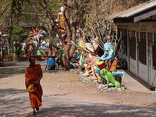

路傍のロックンローラー。今年は申年、年男だね。


次は大仏だ！
WatPhaLokLoi/NakhonRatchasima
泰国地獄四天王之参 タイ第二の街、ナコーンラチャシーマの北、ノーンタイにあるワットパーラックローイ。 想像を絶する激しい寺だった。 寺の入口。 いきなり象さんがお出迎え。入ってすぐ右側には猿の大群が。のっけからタダモノではないオーラが漂っている。 しかしこれらは単なる前座でしかなかった・・・ 門を潜ると駐車場になっている。そこには金の大仏、巨大な虎、そして得体の知れないタワーなどがあり、かなり高い珍寺係数を示している。 この大仏と虎のある場所をスタート地点として遥かなるワットパーラックローイの旅が始まるのだ。 園内、もとい境内は幾つかのエリアにわかれている。大仏の左手前は動物エリア。無数のセメント動物がトコロ狭しと並んでいる。 あまりの数の多さに嬉しくなって思わず走り出しちゃいました。 動物エリアはさしずめ不動の動物園と化していた。 その中で一際目立つ巨大ライオンは中が部屋になっており自動おみくじ機がポツンと置いてありました。 カンガルーと人間のムエタイ。いかにもタイらしい光景ですね。 って、おおっっと！ 回転式自動賽銭装置発見！中央の鉢がぐるぐる回って参拝客の小銭を回収するという素晴らしい参拝遊具。 しかし残念ながら起動していませんでした。 足元には下半身がムカデやワニや亀になちゃったキレイどころもおこぼれを狙ってますので御用心。 美女の成る木。木も勿論コンクリです。美女のつまんなそうな表情が何ともいえません。 その他、このエリアにはドしょぼい遊具などがあり、遠足で来ていた地元のチビッコ達も大喜びで遊んでいた。 動物エリアを抜けると今度は大仏の横にある池エリア。 ここは相当騒がしい。何故なら池の端にある賽銭箱にコインを入れると様々なモノが動き出すからだ。 この水上骸骨自転車はコインを入れるとグァハッハッハッハ〜と絶叫しながらこちらに近付いてくる。 笑い声がでかいので近付いてくると無気味なだけでなくかなり迷惑だ。 その他にも池の上に張ってあるロープを猿が渡ったり、巨大なアヒルが羽をはばたかせながらガーガー叫んだりと様々なマシンがせっせと参拝客の小銭を回収している。 気が付くと手持ちの小銭を全投入していました・・・ でも心配御無用。すぐ横の売店で小銭に両替してくれてます。この商売上手め！ ブタ君のポロシャツにはナイキのマークとMIKEの文字が。今どきポロシャツの胸ポケにボ−ルペン刺すかあ？ さて、絶叫マシン（といっても見る方が絶叫するようなマシンではなく、絶叫しているマシンということ）エリアを抜けると今度は長〜い遊歩道が始まる。 勿論この遊歩道もただの道ではなく、両側にビッチリ変なセメント製の昆虫や蛇などが並んでいて、その量にただ唖然とするばかり。 途中途中には十二支のかなりイカレた動物の像がありその前には賽銭箱がある。 そして賽銭箱からは何故かケーブルが延びていて動物に繋がっている。 これは何かあるぞと思い、少しドキドキしながら小銭を入れると動物の鳴き声が聞こえてきた。 ・・・え、これだけ？ チョット損した気分。 蛇とか龍とかの鳴き声ってどうなってるんだろう？と、凄く気になったがあまりにも馬鹿馬鹿しいのでやめた。 路傍のロックンローラー。今年は申年、年男だね。
歩けども歩けどもセメント像の大群が並ぶ遊歩道は終わらない。一体いつ終わるんだろう、と思っていると道が二股に別れた。  どちらに行こうかと迷ったがこのオブジェを見て一発で決定。 走る首のない人達と拝む鬼太郎のオヤジ一族。何だコレは・・・ 最早、ここが寺である事などすっかり忘れている私。というか造ってる方も忘れてると思う。 脳内チャッカー全開の妄想大回転。  ・・・と思ったら坊さんが歩いて来た。ああ、ここは寺だったんだ・・・ ・・・と我を取り戻そうと思ったら今度はヒンズーの神様がズラリと並ぶエリア。 ああ、やっぱり寺じゃないのだろうか・・・ことごとく揺さぶりをかけてくるぞ。 この辺が園内の一番奥になるようだ。 果たしてここは寺なのか、それともえらく品の悪いテーマパークなのか、良く判らないまま先程の二股に戻りさらに先を目指す。 すると気の触れたお伽話に出てきそうな、激しく趣味の悪い建物が見えて来た。 屋根の上に咲く花は何だぁ！マジックマッシュルームでも食ったのか！ しかも中はこの寺の本堂のようだ。 仏像が安置されており、坊さんが参拝客に向かって説教をしている。 それにしても何だぁ、このインテリア！カッコ良すぎるぞ！本尊の上にモスラが飛んでるじゃないか！ しかもこんなふざけたところで参拝客が一生懸命お参りしているじゃないか！ 私も折角だから上がりこんで参拝しておく。ここでお参りしないと他で参拝するところなど無さそうだから。賽銭箱は佃煮にする程あるのだが。 年配の坊さんがいたので話をした。 その坊さん曰く、この寺のセメント像は20年程前からつくり始めたらしい。 最新作は先程のヒンズーの神様が並んでいるエリアで（坊さんはそこをパラダイスと呼んでいた）、坊さんは結構自慢気だった。 「ここは仏教寺院なのか？」と思わず聞いたら「勿論だ。何故？」と返された。 ・・・あなたがここをお寺と思うのであれば、何もいう事はありません・・・ 本堂（と思われる建物）を過ぎても相変わらず変なセメント像の行列は止まらない。 傘をさしたカエルとか傘をさした亀とかゴルフクラブを持った亀とかキャディーの亀とか。もう全然意味不明。 これらの像から仏教の教えとかを引き出すのは絶対無理です。というかつくってる方もそんな事これっぽっちも考えていないんだろうなあ。 などと思いながらセメント像の行列が続く道を歩いて行くと段々様子が変わって来た。 先程までふざけた動物ばかりだったのだが段々トカゲ類が増えて来て、しかもその合間合間にグロい人形が増えて来た。 ・・・これはもしかして・・・ ジャーン。 いよいよ地獄のお出ましである。 ここまでがすでに悪夢のようなトコロだったがここからが正真正銘の地獄エリアである。 残虐具合も半端じゃありません。逆さ串刺し。 この地獄エリアにおいて作者の妄想と造形センスは尋常の人間の想像する地平線をはるかに超えてしまっている。 顔の壁。顔の樹。 もはや誰も止められない脳内暴走。素晴らしい。 照りつける陽の下で繰り広げられる凶悪な大運動会。負傷者続出。というか全員死亡。 見学者のこっちまで死にそうになりました。 地獄の責め苦のアイデアも凶悪なら造形のセンスも凶悪。この造形を想像出来る脳をもつ人は天才だと思う。 世界中の人が集まって凶悪なものを創ろうとしてもコレはそうそう創りだせないでしょ。 地獄を囲むように小さな小屋が幾つか並んでいる。賽銭箱に小銭を入れると案の定・・・ こんなのばっかりが幾つも並んでいました。あ、また小銭、全部投入してしまった・・・ 無気味だったのが、この阿鼻叫喚の地獄の光景を喜んで見ている人形達。 お金を入れると、ステージの女の子達が踊って歌います。 遠足のチビッコ達も地獄に到着。 怖がるかと思って見ていたら、みんな喜んで自動地獄マシンに小銭を投入してました。 最初の滑り台やブランコよりも楽しそう。しかも笑顔なのに目がギラギラ。 地獄よりチビッコの反応の方が怖かったです。 地獄エリアの隣には何やら沢山の人間が拳を振り上げ気勢をあげている。 大砲の向かう筒先を見ると・・・ あ、出た！ タイ地獄界のお約束の男女巨人！しかも尻に槍が刺さってます。イタタ・・・ これでやっと境内をひと回りして、最初の金の大仏と巨大な虎のところに戻って来れた。もう何日も園内を彷徨っていたようにも思える。 しかしまだまだ油断は禁物。虎の内部にはお化け屋敷のような部屋が。 暗い室内にはまたしても賽銭箱が。 小銭を使い果たしてしまったので、投入すると何が起こるのかは判らなかったが、虎から出てくる時に後から入った客がギャーと叫んでいるのが聞こえた。 最後に謎のタワー。 タワーから虎の前の坊さんにワイヤーが張ってある。賽銭箱もなく小銭もなかったので、坊さんの持っている鉢を手で押すと・・・ あらあら、坊さんがタワーに向かって登って行きました・・・ これで濃ゆい濃ゆいワットパーラックローイのツアーは終了。 あまりの凄さにしばらく頭の整理が付かなかったが、よくよく考えてみたらこれだけセメント像が満載の場所というのはそうそうないだろう。 寺というカテゴリーを外しても世界屈指のセメント像庭園と見た。 私もこの手のところは好きで、あっちこっち見て回ったが、これ程の規模と密度を持った寺は初めてだと思う。 私が訪れた寺の中でも珍寺具合からいったらアジアベスト５に入るだろう。 勿論今回訪れた地獄の中では規模、密度、馬鹿馬鹿しさ、すべてにおいて仏恥義理ナンバーワンだった。 悪い星の下に生まれたどす黒いディズニーランド。感動したぞ。サンキュ。 マリオとルイージのガチンコ対決
次は大仏だ！
泰国超絶地獄列伝 珍寺大道場 HOME